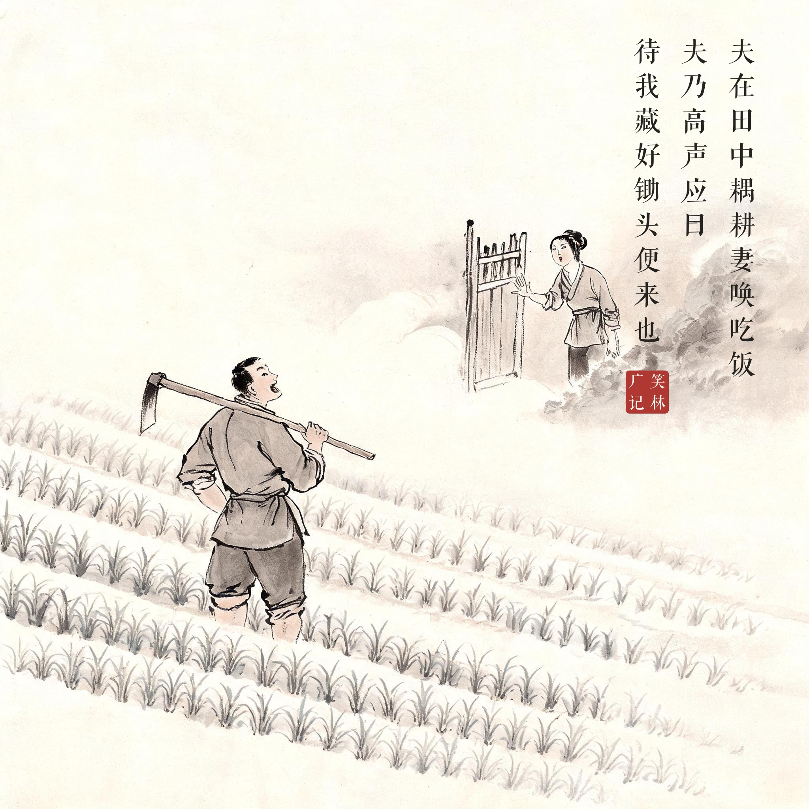
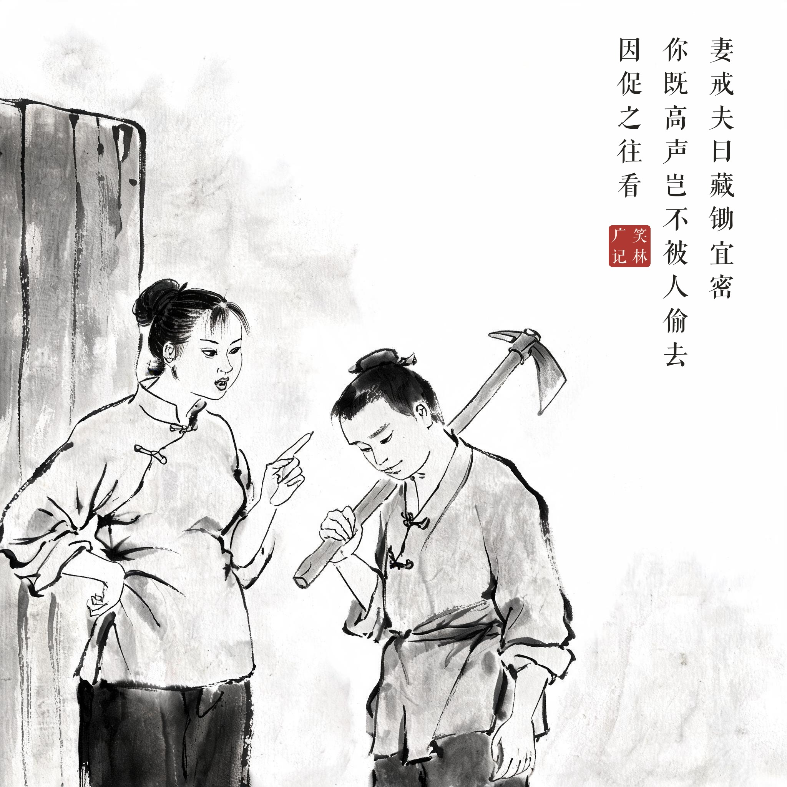
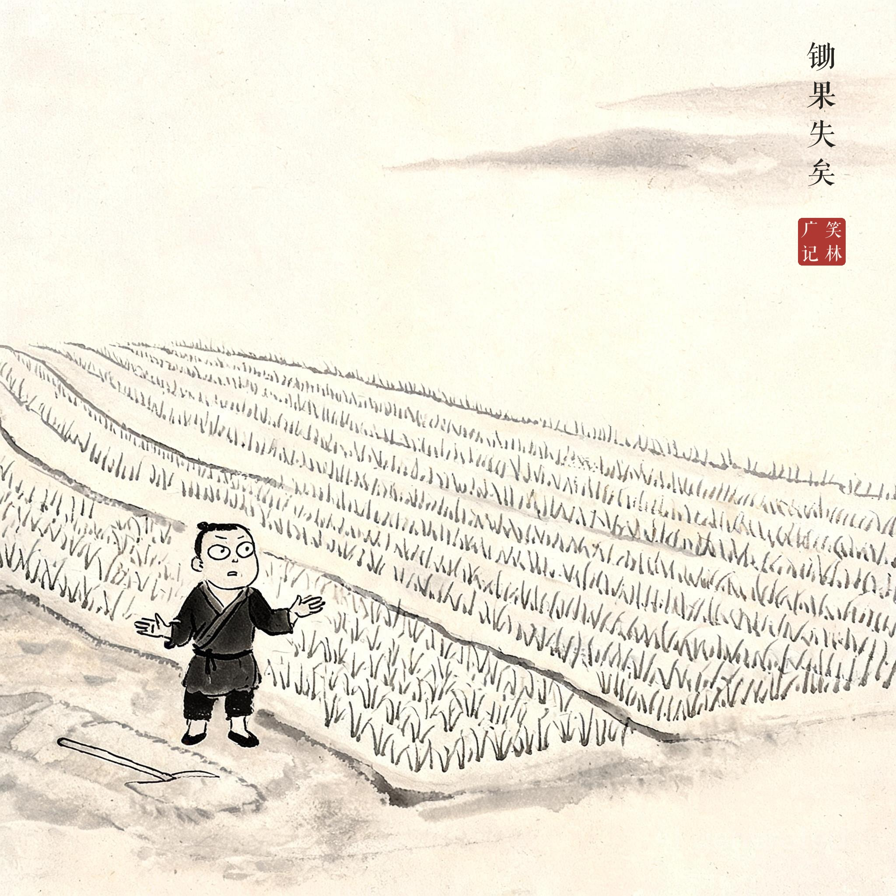
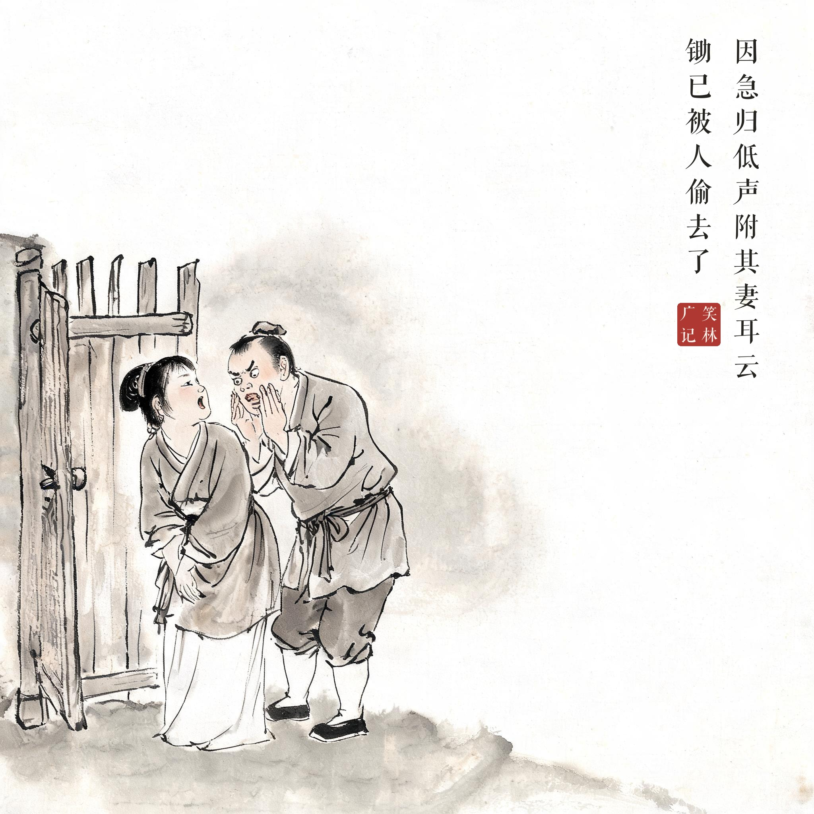

《笑林广记 · 殊禀部》（[清]游戏主人纂集）
夫在田中耦耕，妻唤吃饭，夫乃高声应曰："待我藏好锄头，便来也！"乃归，妻戒夫曰："藏锄宜密。你既高声，岂不被人偷去？"因促之往看，锄果失矣。因急归，低声附其妻耳云："锄已被人偷去了。"
丈夫在田里干活，妻子唤他吃饭，他老远高声应道："等我把锄头藏好，就回来！"回家后，妻子教训他："藏锄头要藏得隐蔽。你这么高声喊出来，还能不被偷？"催他回田里去看——锄头果然丢了。他急忙跑回来，捂着嘴贴在妻子耳边低声说："锄头已经被人偷走了。"
"此地无银"的乡野版：藏锄要高声宣布，锄丢了却要低声耳语——保密的对象全搞反了，憨得自成一派。